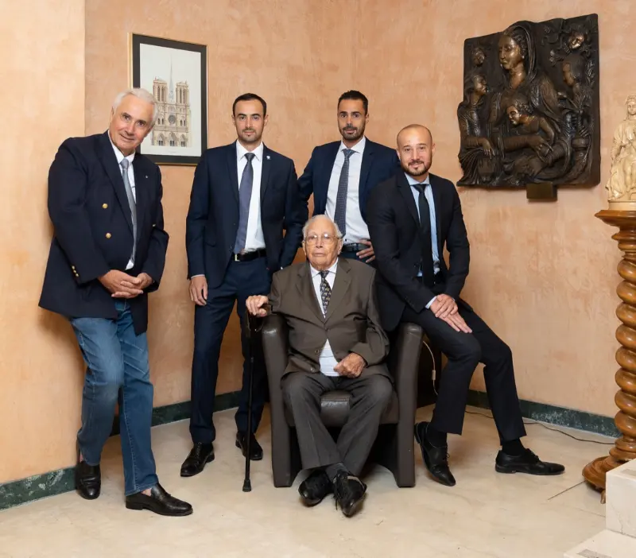

Une maison familiale, depuis plus de 130 ans.
Dirigée par la famille Murith, la maison a déjà accompagné plus de 3 000 personnes dans l’organisation de leurs obsèques.

3 000+personnes nous ont déjà confié l’organisation de leurs obsèques.
Nos garanties
Une entreprise familiale genevoise, depuis plus de 130 ans.
- Une famille, pas un guichetDirigée par la famille Murith depuis plus de 130 ans, avec un accompagnement humain.
- ConfidentialitéVotre démarche reste privée, de la première question à la signature.
- Votre carte de contratElle porte votre numéro de contrat, pour que vos proches sachent qui prévenir.
- Une chaîne d’entraideNous travaillons main dans la main avec le personnel soignant et les administrations.
Partenaires :EXIT
La maison Murith
Les pompes funèbres Murith à Genève, depuis plus de 130 ans.
Active depuis plus de 130 ans, la maison Murith a su, au fil des rencontres et des événements, forger un ADN humaniste avant tout. À ce jour, plus de 3 000 personnes nous ont fait confiance pour leur prévoyance funéraire.
Après la finalisation de votre contrat, vous pouvez disposer de votre compte personnel, avec vos informations de paiement et vos informations contractuelles, pour apporter de la transparence à vous et à votre famille.
Découvrir l’espace personnel
Questions fréquentes
Vous vous demandez peut-être…
Une autre question ? Appelez-nous au +41 22 809 56 00.
Pourquoi souscrire un contrat de prévoyance funéraire ?
Pour décider vous-même de vos obsèques et en régler le financement d’avance. Vos proches n’ont ni à faire des choix dans l’urgence, ni à avancer les frais.
Quelles sont les garanties chez Murith Prévoyance ?
Votre contrat fixe les prestations que vous avez choisies et le montant total des prestations est garanti. Le détail de vos garanties vous est remis avec votre devis.
Comment ma famille accède-t-elle aux dispositions prévues ?
Vous recevez une carte portant votre numéro de contrat. Vos proches la présentent à Murith, qui exécute alors les volontés consignées dans votre contrat.
Puis-je payer en plusieurs fois ?
Oui. Vous pouvez opter pour un versement unique ou un paiement échelonné sur plusieurs mois. En cas de décès avant la fin des paiements, le solde est réclamé à la succession.
Le devis m’engage-t-il ?
Non. Le questionnaire, le devis et le rendez-vous avec un conseiller sont sans engagement.
Une question sur votre contrat ?
Un conseiller vous répond au +41 22 809 56 00.